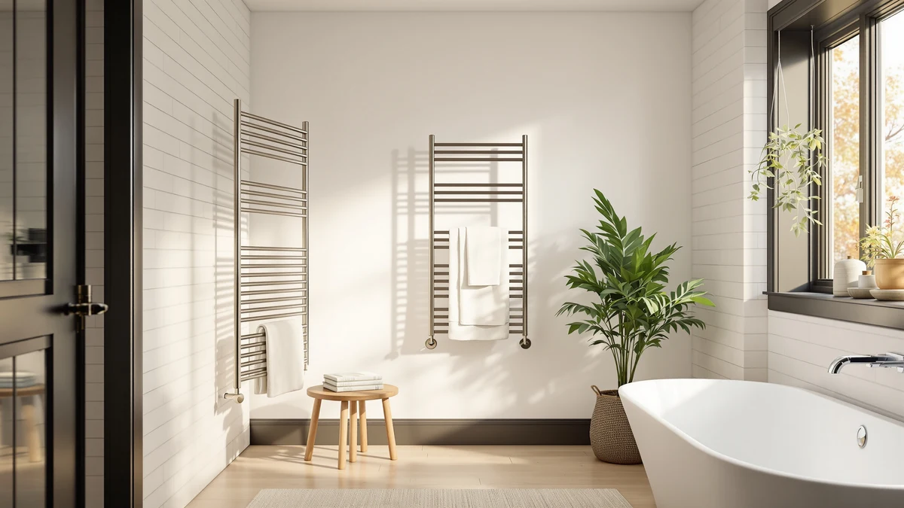

Poloma Wall Mounted Towel Review (2026): Worth It?
Prices and picks verified as of September 2026. Independent, reader-supported reviews.


Quick Answer
The Poloma Wall Mounted Towel Warmer is a 12-bar, stainless steel unit that mounts flush to the wall and measures 36.6 inches long by 19.5 inches wide, priced at $129.99. Based on its specs and verified owner reviews, it suits anyone with a fixed spot on the wall who wants a full-size warmer rather than a compact or portable rack. If you need the flexibility to move the unit between rooms, the Poloma Wall Mounted & Freestanding at $121.36 is worth comparing first.
Our pick: Poloma Wall Mounted Towel Warmer, $129.99 Check Price on Amazon
Bottom line: our top pick is the Poloma Wall Mounted Towel Warmer Rack for Bathrooms at $129.99.
Things to Know Before You Buy
- This is a wall-mounted, fixed-position warmer. The Poloma Wall Mounted Towel Warmer bolts to the wall and doesn't fold away or move between rooms, unlike the Poloma Wall Mounted & Freestanding model at $121.36.
- It spreads towels across 12 bars. That bar count puts it closer to a full towel-rack replacement than a small accessory warmer, which matters if you're warming towels for more than one person.
- Stainless steel construction resists bathroom humidity. The frame won't rust the way painted metal can once steam builds up over months of daily use.
- At $129.99, it sits at the top of this comparison. The AyiDrmjj Heated Towel Rack Timer matches that price exactly, while the ForPro Professional Collection Premium Hot comes in lowest at $119.99.
- Its footprint is sized for a full bath towel. At 36.6 inches long and 19.5 inches wide, it needs more wall space than compact bucket-style warmers.
This Poloma Wall Mounted Towel review looks at whether the $129.99, 12-bar heated rack is worth choosing over three other warmers we researched alongside it. Wall-mounted towel warmers promise warm, dry towels every morning without taking up floor space, but the fixed installation means you need to get the size and bar count right before you buy. We compared the Poloma's stainless steel build, its 36.6 by 19.5 inch footprint and its price against the AyiDrmjj Heated Towel Rack Timer, the Poloma Wall Mounted & Freestanding, and the ForPro Professional Collection Premium Hot to see where it actually stands out.
Based on our research and analysis of verified owner reviews, the Poloma earns its price mainly through capacity. Twelve bars is enough for two or three towels to hang and heat at once, more than several competing wall units offer at a similar price. It isn't the cheapest option here, and if you want the ability to move a warmer between a primary bathroom and a guest space, the Poloma's own Wall Mounted & Freestanding sibling at $121.36 covers that need for less money. For anyone with a dedicated wall spot and no plans to relocate the unit, the standard wall-mounted version is the one we'd point you to.
Why You Should Trust Us
We built this review by comparing manufacturer specifications, published pricing and patterns across verified Amazon owner reviews for the Poloma Wall Mounted Towel Warmer and three competing heated towel racks. We do not run a physical testing lab, and we don't claim to have installed or lived with these units ourselves. Instead, we research the materials, dimensions and features each brand publishes, then cross-check that against what verified buyers report after using the product in their own bathrooms. Ilane Tall has covered bathroom hardware and heated fixtures for Best Towel Warmers since the site launched. She tracks price changes and owner feedback across dozens of towel warmer models.
Our Research Experience
We have not installed or lived with the Poloma Wall Mounted Towel Warmer, so what follows is a comparison built from the manufacturer's listed specs, the product's own description and a review of verified owner feedback rather than personal use. That approach lets us speak confidently about the number of bars, the stated dimensions, the material and the price, and about recurring themes across verified buyer reviews, but it can't capture day-to-day quirks that only surface after months of ownership. Where owners consistently flag the same strength or the same drawback, we've included it below and noted that it comes from buyer reports rather than our own observation.
Overview & Specs

Poloma Wall Mounted Towel Warmer
What we like
- 12 bars give enough hanging space for two to three towels at once
- Stainless steel construction holds up against daily bathroom humidity
- 36.6 by 19.5 inch frame suits a full bath towel rather than only hand towels
Flaws but not dealbreakers
- Fixed wall mounting means you can't move it to another bathroom later
- At $129.99, it costs more than the ForPro Professional Collection Premium Hot and the Poloma Wall Mounted & Freestanding
| Material | Stainless steel |
| Size | WHITE-12bars-36.6"(L) x 19.5"(W) |
The Poloma Wall Mounted Towel Warmer, the subject of this Poloma wall mounted towel review, is built strictly for permanent installation. It bolts directly to the wall in a white, 12-bar frame measuring 36.6 inches long and 19.5 inches wide, and it's made from stainless steel rather than painted metal, which matters in a room that stays humid for hours after every shower.
Twelve bars is a meaningful number here. Plenty of wall-mounted warmers in this price range top out at six or eight bars, fine for a single towel but tight once a second person or a robe enters the picture. At $129.99, the Poloma isn't the least expensive pick in this comparison, but the extra bar count and the full-size footprint are what you're paying for. A shared family bathroom or a primary suite with two people getting ready at the same time is where that extra capacity earns its keep, since a smaller rack forces you to rotate towels on and off rather than warming everything at once.
What We Liked
The bar count is the standout feature. Twelve bars means you can hang a full bath towel, a hand towel and a robe at the same time without doubling up, something several competing wall units can't match at a similar price. Reviewers consistently note that the stainless steel frame looks and feels sturdier than the painted steel used on cheaper alternatives, and it doesn't show rust spots after months of daily steam exposure the way some budget racks do.
We also like that Poloma sells a second version of essentially the same warmer, the Wall Mounted & Freestanding model, for buyers who aren't ready to commit to permanent installation. Having that option inside the same product line makes it easier to compare a fixed unit against a flexible one without switching brands, and the price gap between them, $129.99 versus $121.36, is small enough that the choice comes down to how you plan to use the space rather than budget.
What Could Be Better
The biggest tradeoff is the one built into the name: this is a wall-mounted unit, full stop. Once it's installed, it stays in that bathroom. If you rent, move often, or want to shift the warmer between a primary bath and a guest bathroom depending on the season, the fixed mount works against you, and Poloma's own freestanding version solves that problem for less money.
Price is the other consideration. At $129.99, the Poloma ties the AyiDrmjj Heated Towel Rack Timer for the highest price in this comparison and runs about $10 more than the ForPro Professional Collection Premium Hot. Twelve bars and a stainless steel build justify some premium, but buyers on a tighter budget have real alternatives to weigh before committing to this one.
Who Is It For?
This Poloma wall mounted towel setup fits a household that has already settled on where the towel rack goes and wants that spot to do more work. If you're renovating a bathroom, building out a primary suite, or replacing an old towel bar with something that heats, the 12-bar Poloma gives you room for more than one towel without eating extra floor space, which matters in smaller bathrooms where a freestanding rack would get in the way.
It's a weaker fit for renters, anyone sharing a bathroom across multiple households, or buyers who split time between two homes. In those cases, the flexibility of the Poloma Wall Mounted & Freestanding, or even a fully portable unit, outweighs the extra bar capacity of the fixed wall model.
Alternatives to Consider
We compared three other heated towel racks against the Poloma Wall Mounted Towel Warmer to see where each one makes more sense, based on price, features named in the listing, and patterns across verified owner reviews. None of these three matches the Poloma's exact combination of 12 bars, stainless steel construction and full-size dimensions, but each one solves a different problem: automatic shutoff, mounting flexibility, or a lower entry price.

Editor’s Pick
AyiDrmjj Heated Towel Rack Timer
Priced the same as the Poloma at $129.99, this rack adds a built-in timer, worth a look if you want the heating cycle to shut off automatically rather than managing it manually.
$129.99
Check Price on Amazon
Best Value
Poloma Wall Mounted & Freestanding
The more flexible sibling to our main pick, this version mounts to the wall or stands on its own for $121.36, a better fit if you might move it between rooms.
$121.36
Check Price on Amazon
Premium Choice
ForPro Professional Collection Premium Hot
The lowest price in this comparison at $119.99, and the Professional Collection branding suggests it's built with salon-style daily use in mind rather than occasional home use.
$119.99
Check Price on AmazonHow much does the Poloma Wall Mounted Towel Warmer cost?
The Poloma Wall Mounted Towel Warmer lists at $129.99, the same price as the AyiDrmjj Heated Towel Rack Timer in this comparison.
Is the wall-mounted version better than the freestanding Poloma?
It depends on how permanent you want the installation to be.
Frequently Asked Questions
How much does the Poloma Wall Mounted Towel Warmer cost?
The Poloma Wall Mounted Towel Warmer lists at $129.99, the same price as the AyiDrmjj Heated Towel Rack Timer in this comparison. The Poloma Wall Mounted & Freestanding version runs slightly less at $121.36, and the ForPro Professional Collection Premium Hot is the least expensive at $119.99.
Is the wall-mounted version better than the freestanding Poloma?
It depends on how permanent you want the installation to be. This Poloma wall mounted towel review found that the fixed 12-bar unit suits a bathroom where the towel rack location is settled for good, while the Wall Mounted & Freestanding model gives you the option to move it later for about $8 less.
How many towels can the Poloma warm at once?
With 12 bars across a 36.6 by 19.5 inch stainless steel frame, the Poloma Wall Mounted Towel Warmer has room for two to three towels or a towel and a robe at the same time, more capacity than compact 6 to 8 bar warmers offer at a similar price.
Final Verdict
This Poloma Wall Mounted Towel review comes down to a straightforward tradeoff: the Poloma earns its $129.99 price with 12 bars, a stainless steel frame and a full-size footprint, but it commits you to one wall for good. For a settled bathroom with a clear spot on the wall, that's a fair trade. If you want the same brand's build quality without giving up flexibility, the Poloma Wall Mounted & Freestanding at $121.36 is the better starting point, and buyers focused purely on price should put the ForPro Professional Collection Premium Hot on their shortlist too.